Home
Desktop and mobile renders
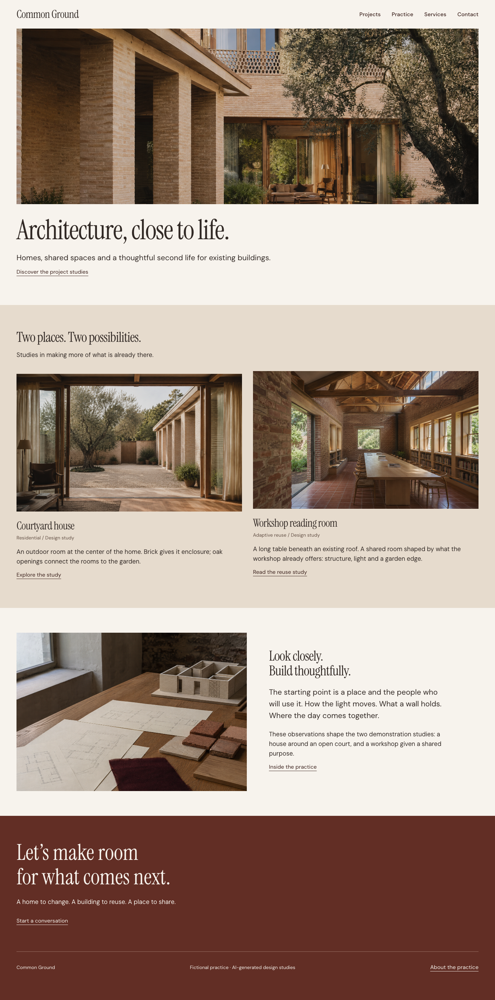
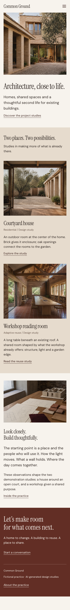
The complete native redesign. Final QA adjusted the mobile worktable crop to keep the architectural model visible.
Explore the six-page Cloud site · WordPress test site · Customization guide
Both isolated hosts passed visual review and native editing checks. WordPress requires the unreleased host fixes documented in the guide; this does not certify a public WordPress release.
Final package: 64f9502e…293e1d. Not uploaded yet.


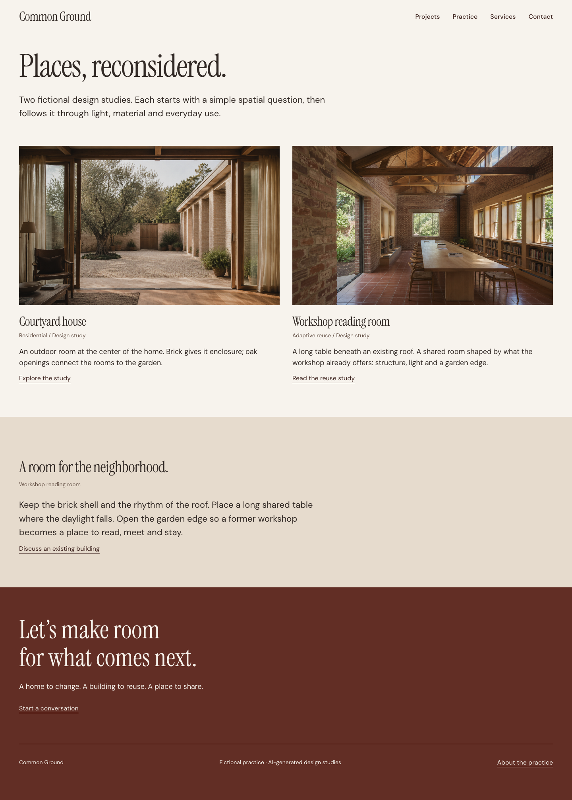
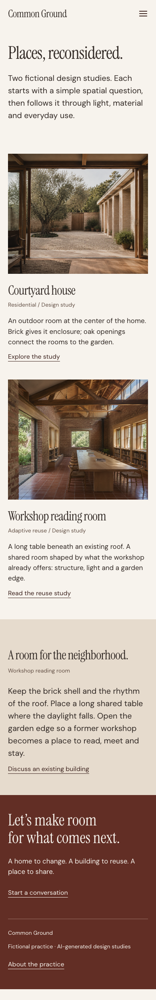
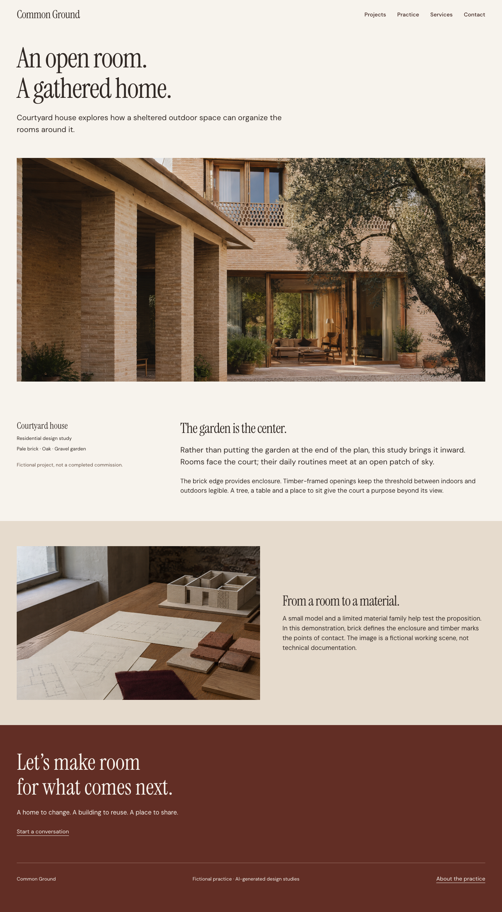
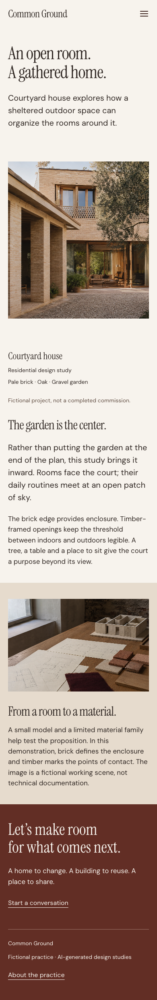
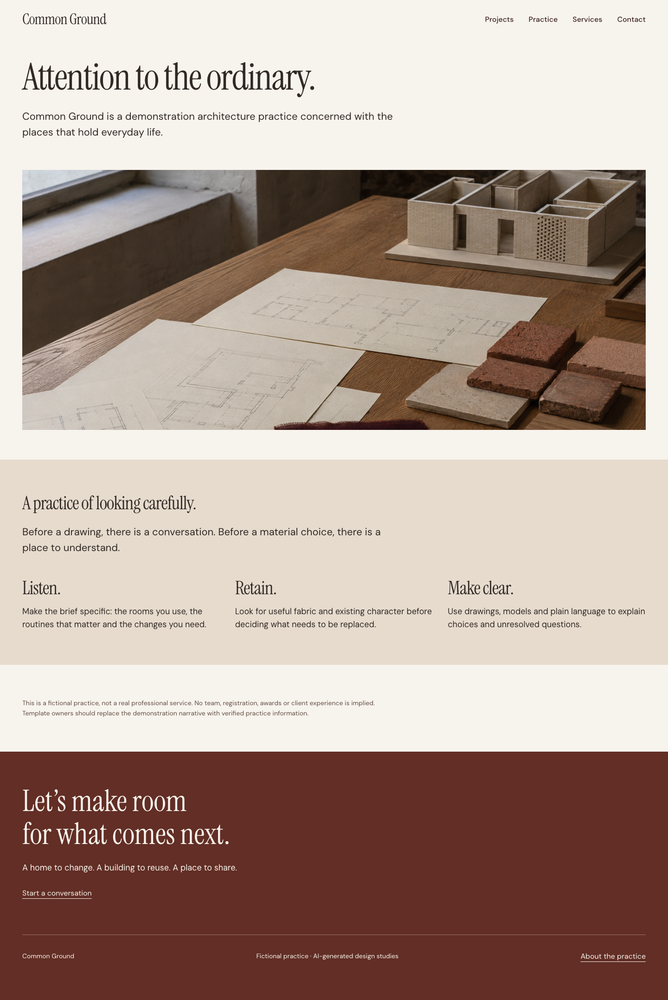
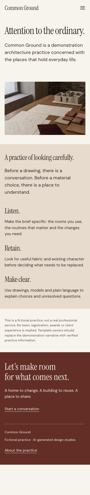
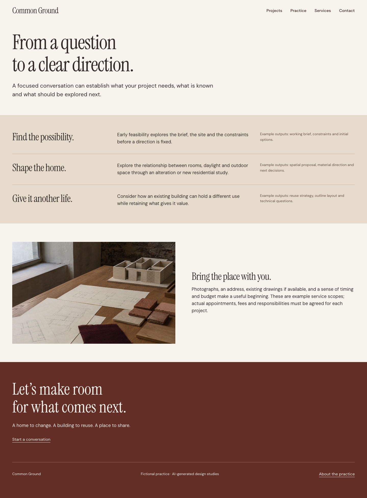
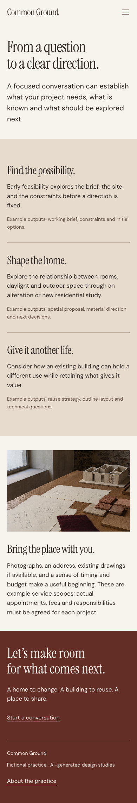
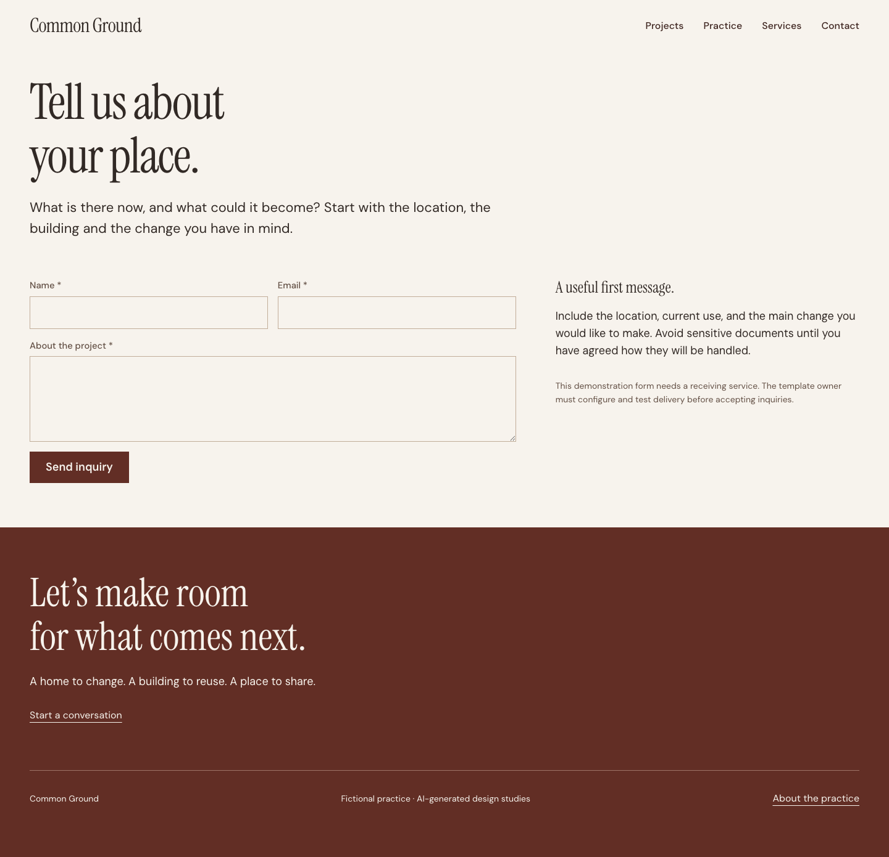
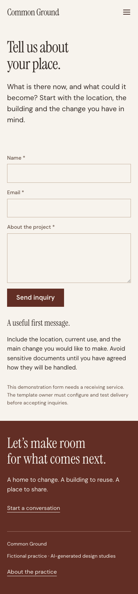